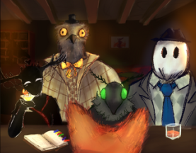

Hello! I am Zackarias Häger.
I am a Game programmer,
currently studying at Future games in Skellefteå.

Murder on the rocks
was the third game project I worked on while at future games, developed with Unreal Engine. It's a text story driven game, with a few minigames you will do in a bar. It was a endearing game me & my team made.
Hydro-flippers
was the second game project I developed at future games, developed with Unreal Engine. It's a boat racing mobile game where you play co-op with someone locally on the same device.
I built up the player movement and controls in this game, it was quite the challenge due to how it would interact with the ramps (the game mechanic in this game that let you score points
as you played).
 Wrathful hedgehog
Wrathful hedgehog
was the first game project I developed at future games, developed with Unity. It is a first person shooter hoard game, that I also worked on & my team.
My contribution in this project was the guns system, the reloading, shooting, swapping of guns was all me, I also made the player movement. one of my
obstacles with this project was getting the player not to slide around everywhere.
 Breached
Breached
was the fourth game project I developed at future games, developed with Unreal Engine. Breached is another hoard based shooter game, that I have made with my lovely team over at future games.
In breached I have worked on the guns system, the Nitrogenlauncher in this game, was quite the pickle to make though, first I made the hitbox system and collision of it in c++ then I made the rest of it in blueprint. Several times I had difficulties trying to make it work with the enemy blueprints but eventually I got it working.